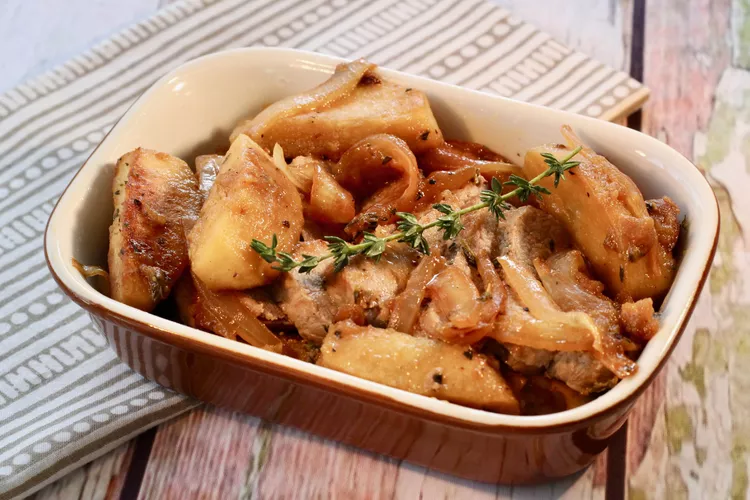

Pork Tenderloin with Apples and Onions

Pork tenderloin with apples and onions is an easy, tasty main dish for the family on a weeknight. While the pork roasts in the oven, steam a veggie side and prepare a quick salad.
Ingredients
- 2 (1 1/2 pound) pork tenderloins
- 2 teaspoons vegetable oil
- 1 teaspoon sea salt
- 2 tablespoons vegetable oil, divided, or more as needed
- 3 medium Granny Smith apples - peeled, cored, and sliced into eighths
- 2 medium sweet onions, sliced vertically
- 3 teaspoons chopped fresh thyme, divided
- ¼ teaspoon ground black pepper, or to taste
- 1 tablespoon Dijon mustard
- 1 cup chicken stock
- 1 tablespoon butter
Directions
- Preheat the oven to 425 degrees F (220 degrees C).
- Trim silver skin from pork tenderloins; pat dry using paper towels. Rub 2 teaspoons vegetable oil over tenderloins, then rub with sea salt.
- Heat 1 tablespoon vegetable oil in a large, oven-proof skillet over medium heat until it shimmers. Cook tenderloins in hot oil, rotating to brown all sides, about 10 minutes. Transfer pork to a large plate.
- Add remaining 1 tablespoon vegetable oil to any drippings in the skillet. Cook apples and onions in hot oil, stirring occasionally, until onions turn translucent, about 5 minutes; add more oil if the skillet gets dry. Season with 1 teaspoon thyme and black pepper; stir gently to combine. Remove from heat.
- Use a pastry brush to spread Dijon mustard evenly over tenderloins. Sprinkle with remaining 2 teaspoons thyme. Nestle tenderloins into the skillet with apple mixture.
- Roast, uncovered, in the preheated oven until an instant-read thermometer inserted into the center of tenderloins reads at least 145 degrees F (63 degrees C), about 15 minutes. Remove the skillet from the oven and transfer pork to a large platter. Cover with aluminum foil and let rest.
- Meanwhile, pour chicken stock into a saucepan and cook over medium-high heat until reduced by half, 8 to 10 minutes. Pour into the skillet with apple mixture. Cook over medium-high heat until boiling, about 5 minutes; stir in butter until melted.
- Slice pork and serve over apple mixture.